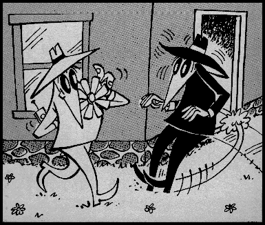

Mozilla のためのコンポーネントセキュリティ

私たちは、Mozilla をよりセキュアなプラットフォームにするために、あなたの協力を
必要としています。参加方法については以下をご覧ください。
「コンポーネントセキュリティ」とは
以下のページでは、Mozilla のコンポーネントにセキュリティを追加するプロジェクトについて説明します。私たちは暗号化セキュリティ (SSL、認証、S/MIME など) は扱って いません。そのようなテーマについては オープンソース PKI プロジェクト をご覧ください。
その代わりに、Java や JavaScript のセキュリティを Mozilla のコンポーネントに追加する方法、主に、この 2 つの言語で作成されたプログラムに使用できる、移植可能なコードやブラウザインターフェイスについて解説します。
これはとにかく難しい作業ですが、Mozilla については特に慎重を要するものです。これは、Mozilla が、ブラウザ自体を実装するために、ますます多くのインターネット技術を利用しているためです。これは、モジュール方式、クロスプラットフォームな開発、幅広い人々による活発な開発にとっては多くの利点があります。しかし、ブラウザのセキュリティを保証するプロセスをより困難なものにしている面もあります。なぜなら、信用できるブラウザと、それが表示する信用できないコンテンツのあいだに壁を築く必要があるからです。
ドキュメント
- Mozilla のセキュリティ評価と最良実践ガイド
- 同一生成元ポリシー
- 署名済みスクリプトポリシー
- 設定可能なセキュリティポリシー (CAPS)
- 署名済みスクリプトと特権: 実例
- リモート信用許可にマスター証明書を使用する
- ファイルごとの特権を設定する
- mozilla.org のセキュリティバグ取り扱いに関する指針
- Mozilla セキュリティグループの現在のメンバー
- Mozilla における既知の脆弱性
- 2002 年 3 月 4 日に行われた「Mozilla セキュリティ入門」会議からのスライド (XML)
担当者
- Mitch Stoltz - Mozilla の「消防士」 (技術、アーキテクチャ)
- Bindu Sharma - 「消防隊長」 (品質保証)
Mozilla セキュリティニュースグループ は、セキュリティに関する問題を提起するのに適した場所です。
希望リスト・今後のプロジェクト
- バッファオーバーランの問題 - 私たちは、このセキュリティ問題のしつこい原因を一掃するために、広範囲にわたるイニシアチブをまもなく立ち上げる予定です。あなたのコードに潜むバッファオーバーランの可能性を発見する方法についてのヒントを得るために、この場所をご覧ください。
- 署名済み XPI - XPInstall エンジン に暗号による署名検証を追加したいと思っています。
- CheckLoadURI ポリシーのやり直し - 一部のエリアでは適用されない場合があり、他方ではとても限定的です。このポリシーが必要な場所や、どんな規制を実行すべきかといったことを再検証する必要があります。
- より優れた Java 互換性 - 今のところ、JavaScript は署名済みアプレットの特権関数を呼び出すことができません。Mozilla セキュリティマネージャと Java プラグインのよりよい統合が必要です。
あなたの協力を必要としています! 上にあるプロジェクトで 1 つでも興味を持ったものがあれば、ぜひお知らせください。また、もっとコミュニティ的なセキュリティ評価も必要です。あなたが知っている Mozilla モジュールを選んで、バッファオーバーランや特権の不正利用、その他のセキュリティ問題がないか探してみてください。なにかあったらすぐに、注意して探し出したもののリストをここで再確認してください。オープンソース開発が安全なソフトウェアにつながるということを世界に証明しましょう!